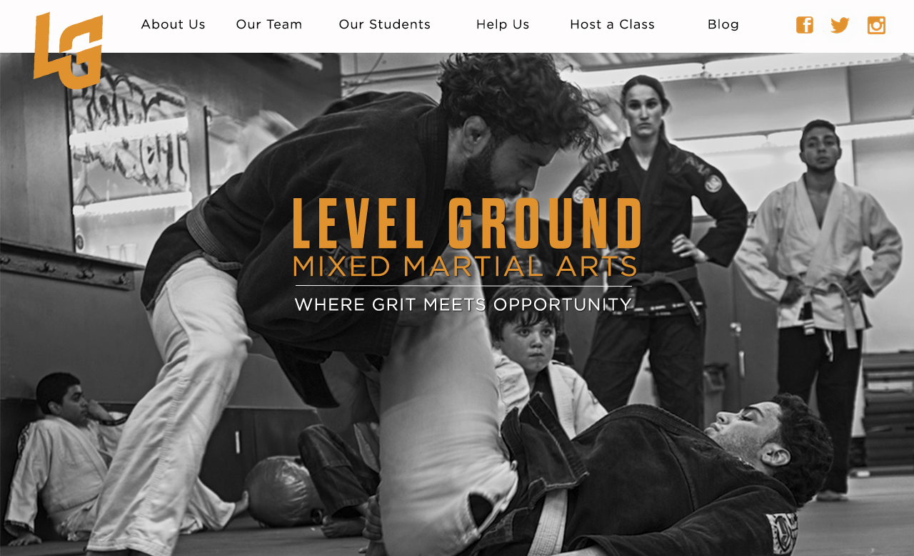

Level Ground
During my first week as a student at the StartUp Institute in Boston, MA, we were thrusted into groups for a 24-hour ideahack with a local group, Level Ground, who teach MMA to disadvantaged kids and corporations.
Level Ground desired to grow their corporate MMA training program. This task includes a variety of challenges, that requires marketing, sales, design, and back-end development. Our team of five tackled the enormous task, and as the only design student, I put forth my potential redesign of their website.
